5.신종 코로나바이러스(COVID-19) PCR
5-1. 신종 코로나바이러스(COVID-19) PCR
(PowerChekTM SARS-CoV-2 Real-time PCR Kit, 코젠바이오텍)
5-2. 신종 코로나바이러스(COVID-19) PCR
(STANDARD M nCoV Real-Time Detection kit , 에스디바이오센서)
5-3. 신종 코로나바이러스(COVID-19) PCR
(Xpert Xpress SARS-CoV-2, Cepheid)
5-4. 신종 코로나바이러스(COVID-19) PCR
(BioSewoom, Real-Q Direct SARS-CoV-2 Detection Kit)
5-5. 신종 코로나바이러스(COVID-19) PCR
(STANDARD™ M10 SARS-CoV-2)
분자진단 검사지침서
Realtime PCR method
Alinity m HBV는 실시간 중합효소연쇄반응(Real-Time Polymerase Chain Reaction)으로 사람 혈장, 혈청 검체에서 추출한 HBV DNA 게놈 서열을 중폭하고 검출한다.
HBV DNA는 Alinity m Sample Prep Kit 2, proteinase K, Alinity m lysis solution, Alinity m Diluent Solution을 사용해 사람 혈청이나 혈장에서 추출된다.
Alinity m System은 자성 미세입자 기술(magnetic microparticle technology)을 통해 핵산 포획, 세척 및 용리를 최적화한다.
이를 통해 얻어진 추출, 핵산(nucleic acid)은 액상 형태의 1회 분량 Alinity m HBV 활성화 시약 및 동결건조 된 1회 분량 Alinity m HBV 증폭/검출 시약과 혼합된 후 반응 용기(rv)로 옮겨진다.
반응 용기에 Alinity m Vapor Barier Solution이 첨가된 후 증폭/검출 유닛으로 옮겨져 PCR 증폭과 실시간 HBV 발광체 검출이 수행된다.
HBV DNA 농도 측정을 위해 HBV 보정 곡선이 요구된다. 보정곡선 설정을 위해 2개 농도의 캘리브레이터가 검체 준비 및 PCR 절차로 처리된다.
저장된 보정곡선을 기준으로 검체와 대조군 내 HBV DNA의 농도가 계산된다.
혈청 또는 혈장 내의 HBV DNA는 핵산 증폭 또는 시그널 증폭 기술을 이용하여 정량 할 수 있다.
Alinity M HBV Assay는 PCR 기술과 실시간 형광 검출 시스템을 조합하여 HBV DNA를 정량 검사할 수 있다.
Surface 유전자에서 변하지 않는 부분을 선택하여 A에서 I까지의 genotype을 검출 할 수 있다.
N terminal의 타겟 위치는 YMDD 돌연변이, HBsAg 돌연변이 또는 약제내성 돌연변이에 영향을 받지 않는다.
이 검사는 WHO의 hepatitis B Virus DNA의 국제 기준을 따르고 있으며 결과는 IU/ml로 보고 할 수 있다
Hepatitis B Virus (HBV)는 B형 간염의 원인체로 알려져 있다. HBV 는 성적접촉, 감염된 혈액 또는 혈액이 포함된 제품에 노출되어 감염되거나 모체로부터 수직감염된다.
HBV는 작고 둥글며, 약 3200 base pair 정도의 이중 나선 구조 DNA 바이러스입니다. 이 바이러스에 감염되면 만성감염, 간경화, 간암, 간 기능 부전, 심하면 사망에까지 이를 수 있다.
HBV감염의 유병율과 전파 방법은 전세계적으로 매우 다양하다.
높은 만성 HBV 감염 유병율을 보이는 나라에서의 가장 흔한 감염 경로는 신생아가 태어날 때 엄마에서 아이로, 또는 어린 시절 아이들끼리의 놀이에서 감염 될 수 있습니다.
낮은 유병율을 보이는 지역에서는 감염은 일반적으로 어른이 되어 정맥 주사를 맞거나 높은 위험군의 성적행위로 인해 나타나는 경우가 있다.
급성 간염에서 만성 간염으로 발전하는 경우는 감염된 엄마로부터 신생아가 감염되었을 때가 90%, 5세 이하 어린이들이 25~30%, 어른의 경우는 10% 정도입니다.
면역력을 기르는 것은 HBV감염을 예방하는 가장 좋은 방법으로 성간염으로의 진행을 95%이상 방지할 수 있다.
HBV DNA의 정량 검사는 만성 HBV감염 환자를 관리함에 있어서 매우 중요 합니다.
현재 만성 HBV감염 환자의 HBV 바이러스 농도를 확인함에 있어서의 가이드라인에서는 치료에 대한 반응을 확인하면서 치료해야 한다고 권고하고 있다.
반대로, 높은 수준의 바이러스 농도는 치료에 대한 저항뿐만 아니라 치료 후 재발을 예측할 수 있다.
또한 hepatocellurlar carcinoma에 대한 독립적 위험 인자로서 확인 할 수 있습니다.
현재 치료 조건은 interferon, peginterferon, 그리고 lamivudine, adeforivr 그리고 tenofovir와 같은 항바이러스 약을 포함하고 있다.
혈장검사
| 검체종류 | 온도 | 최대 보관 기간 | 특별지침 |
|---|---|---|---|
| 전혈 | 2 – 8 ℃ | 2일 | 전혈 검체는 채혈과 혈장 분리 사이에 보관할 수 있다. |
| 15 - 25 ℃ | 1일 | ||
| 혈장 | 2-8℃ | 3일 | 혈장은 혈액세포로부터 분리된 후 1차 튜브 혹은 2차 튜브에서 보관할 수 있다. |
| 15 - 25 ℃ | 1일 | ||
| -20 ℃ | 30일 | 혈장은 혈액세포로부터 분리된 후 1차 겔 튜브(PPT)에서 냉동보관 할 수 있다. 겔튜브가 아닌 튜브에 담겨있던 혈장은 보관 전에 2차 튜브로 옮겨야만 한다. |
|
| -70 ℃ 이하 | 장기보관 |
주의 3회 초과 반복된 냉/해동을 피한다.
혈청검사
| 검체종류 | 온도 | 최대 보관 기간 | 특별지침 |
|---|---|---|---|
| 전혈 | 2 – 8 ℃ | 2일 | 전혈 검체는 채혈과 혈청 분리 사이에 보관할 수 있다. |
| 15 - 25 ℃ | 1일 | ||
| 혈청 | 2-8℃ | 3일 | 혈청은 혈전으로부터 분리된 후 1차 튜브 혹은 2차 튜브에서 보관할 수 있다. |
| 15 - 25 ℃ | 1일 | ||
| -20 ℃ | 30일 | 혈청은 혈전으로부터 분리된 후 1차 겔 튜브(SST)에서 냉동보관 할 수 있다. 겔튜브가 아닌 튜브에 담겨 있던 혈청은 보관 전에 2차 튜브로 옮겨야만 한다. |
|
| -70 ℃ 이하 | 장기보관 |
주의 3회 초과 반복된 냉/해동을 피한다.
검체의 준비
부적합 검체기준
| 구성 | 조성 |
|---|---|
| Alintiy m HBV AMP KIT TRAY 1 x 4 4개 트레이/각 48회 검사 |
건조제 팩과 함께 박막 주머니에 개별 포장. 48회 분량의 동결건조된 증폭시약 well 및 48회 분량의 동결건조된 IC 및 Proteinase K 시약 well 로 구성된다. 1회 검사 시 각 well 이 하나씩 사용된다. 증폭시약 well은 합성올리고핵산염(oligonucleotides), DNA Polymerase, Uracil-DNA Glycosylase, 첨가제 및 dNTPs을 포함한 완충용액(reference dye 함유)로 구성. 내부 대조군(Internal control(IC))과 Proteinase K well은 비감염성 선형 플라스미드 DNA(linearized plasmid DNA), proteinase K 및 첨가제를 포함한 완충용액(Carrier DNA 함유)으로 구성. |
| Alintiy m HBV AMP KIT TRAY 2 x 4 4개 트레이/각 48회 검사 |
박막 주머니에 개별 포장 48회분량의 액체 활성화 시약 well로 구성된다. 1회 검사 시 각 well 이 하나씩 사용된다. 활성화 시약 well은 염화그네슘과 염화테트라메틸암모늄을 포함한다. 보존제: 0.15% ProClin 950 |
| 구성 | 용량 | 농도 |
|---|---|---|
| CALA | 4 x 1.65 mL | 약 2.53 Log IU/mL |
| CALB | 4 x 1.65 mL | 약 6.42 Log IU/mL |
Alintiy m System에서 검사 캘리브레이션을 수행할 때 필요하다. Alinity m System은 각 캘리브레이터 튜브에서 3회 반복검사를 수행한다. 2개(CAL A, CALB)의 캘리브레이터에서 얻은 데이터를 이용하여 보정곡선을 작성한다.(양성 농도의 발광신호가 검출되었을 때 로트 특이적인 HBV 농도 대 임계치 사이클[Ct]). 보정곡선의 기울기와 절편이 계산되고 장비에 저장된다. 일단 검사 캘리브레이션이 수락되고 저장되면, 다음의 상황이 발생하는 경우를 제외하고는 추가 캘리브레이션 없이 계속해서 검체를 검사할 수 있다.
억제 검출 (Detection of Inhibition)내부 대조군 임계치 사이클(IC threshold cycle [Ct]) 검사의 유효성 파라미터는 캘리브레이션 수행 중 수립된다. 올바른 검체 처리와 검사 유효성을 확인하기 위해 미리 정의된 일관적인 내부 대조군(IC)이 검체 준비 단계에서 각 검체, 캘리브레이터 및 컨트롤에 추가되어 Alinity m System에 의해 측정된다.캘리브레이터 검체로부터 얻은 IC Ct 중간값으로 연속해서 처리될 검체와 컨트롤에 대한 IC Ct 유효성 범위를 확립할 수 있다. 검체나 컨트롤의 IC Ct 값이 IC Ct 유효성 범위를 벗어나면 메시지 코드(Message Code)가 부여된다. IC Ct 값이 IC Ct 유효성 범위의 상한을 초과하면 비정상적인 검사 상태(억제등)을 시사한다.
| 구성 | 용량 | 농도 (Log IU/mL) | 범위 (Log IU/mL) |
|---|---|---|---|
| HBV NEG CTRL | 12 x 1.15 mL | Not detected | Not detected |
| HBV LOW POS CTRL | 12 x 0.45 mL | 약 2.53 Log | ± 0.75 Log |
| HBV HIGH POS CTRL | 12 x 0.45 mL | 약 4.47 Log | ± 0.75 Log |
정량 바이러스량 결과 값은 검사의 정량 범위 내의 HBV 바이러스 농도와 함께 혈장 및 혈청 검체에 대하여 보고된다. 검체의 HBV DNA 농도는 장비 소프트웨어에 의하여 보정곡선을 이용하여 계산된다. Alinity m System은 단위(International Units) IU/ mL 또는 Log [IU/mL]로 결과 값을 보고한다. 검체 희석 절차를 통하여 검사된 검체의 경우, Alinity m System은 검사자가 선택한 희석배수를 역산하여 미희석(희석 전) 상태에 해당하는 결과값을 보고한다.
HBV DNA real time PCR : < 10 IU/mL
수동 희석 절차
권장 희석배수: ① 1:10, ② 1:100
① 900 μL의 DW 또는 PBS 에 100 μL의 환자검체를 추가하여 충분한 진탕(Vortex) 후 검사한다.
② ①번 10배희석 검체 100 μL를 DW 또는 PBS 에 900 μL에 넣어 충분한 진당(Vortex)후 검사한다.
표1. 혈장에서의 Alinity m HBV 검출 한계 (LOD)
| HBV DNA (IU/mL) | 유효한 반복 검사 갯수 | 검출 갯수 | 검출률 (%) |
|---|---|---|---|
| 15.00 | 94 | 92 | 97.9 |
| 10.00 | 95 | 95 | 100.0 |
| 7.00 | 95 | 92 | 96.8 |
| 4.00 | 94 | 80 | 85.1 |
| 2.00 | 93 | 63 | 67.7 |
| 1.00 | 95 | 39 | 41.1 |
| 0.50 | 94 | 18 | 19.1 |
프로빗 분석(Probit analysis)을 통해 95% 확률 (LoD by Probit)로 검출된 혈장 내 HBV DNA 농도를 6.72 IU/mL (95% CI 5.28 - 9.27 IU/mL)로 결정하였다.
표2. 혈청에서의 Alinity m HBV 검출 한계 (LOD)
| HBV DNA (IU/mL) | 유효한 반복 검사 갯수 | 검출 갯수 | 검출률 (%) |
|---|---|---|---|
| 15.00 | 96 | 95 | 99.0 |
| 10.00 | 95 | 91 | 95.8 |
| 7.00 | 95 | 89 | 93.7 |
| 4.00 | 96 | 83 | 86.5 |
| 2.00 | 93 | 59 | 63.4 |
| 1.00 | 92 | 47 | 51.1 |
| 0.50 | 94 | 35 | 37.2 |
프로빗 분석(Probit analysis)을 통해 95% 확률 (LoD by Probit)로 검출된 혈청 내 HBV DNA 농도를 9.62 IU/mL (95% CI 7.14 – 14.43 IU/mL)로 결정하였다.
표3. 혈장에서의 Alinity m HBV 유전자형 검출 한계(LOD)
| 유전자형 | HBV DNA (IU/mL) | 유효한 반복 검사 갯수 | 검출 갯수 | 검출률(%) | 95% CI (%)a |
|---|---|---|---|---|---|
| B | 20.00 10.00 7.00 | 29 30 30 | 29 30 30 | 100.0 100.0 100.0 | 100.0 100.0 100.0 |
| C | 20.00 10.00 7.00 | 30 30 29 | 30 30 28 | 100.0 100.0 96.6 | 100.0 100.0 99.2 |
| D | 20.00 10.00 7.00 | 30 30 30 | 30 29 30 | 100.0 96.7 100.0 | 100.0 99.3 100.0 |
| E | 20.00 10.00 7.00 | 30 30 30 | 30 30 29 | 100.0 100.0 96.7 | 100.0 100.0 99.3 |
| F | 20.00 10.00 7.00 | 30 30 30 | 30 30 30 | 100.0 100.0 100.0 | 100.0 100.0 100.0 |
| G | 20.00 10.00 7.00 | 30 30 30 | 30 30 30 | 100.0 100.0 100.0 | 100.0 100.0 100.0 |
a 단측 상한 95% 신뢰 구간(%).
표4. 혈청에서의 Alinity m HBV 유전자형 검출 한계(LOD)
| 유전자형 | HBV DNA (IU/mL) | 유효한 반복 검사 갯수 | 검출 갯수 | 검출률(%) | 95% CI (%)a |
|---|---|---|---|---|---|
| B | 20.00 10.00 7.00 | 30 30 30 | 30 29 29 | 100.0 96.7 96.7 | 100.0 99.3 99.3 |
| C | 20.00 10.00 7.00 | 30 28 28 | 30 28 27 | 100.0 100.0 96.4 | 100.0 100.0 99.2 |
| D | 20.00 10.00 7.00 | 28 29 29 | 28 26 28 | 100.0 89.7 96.6 | 100.0 89.7 96.6 |
| E | 20.00 10.00 7.00 | 30 29 30 | 30 29 27 | 100.0 100.0 90.0 | 100.0 100.0 90.0 |
| F | 20.00 10.00 7.00 | 30 30 29 | 30 30 28 | 100.0 100.0 96.6 | 100.0 100.0 96.6 |
| G | 20.00 10.00 7.00 | 30 30 29 | 30 30 29 | 100.0 100.0 100.0 | 100.0 100.0 100.0 |
| H | 20.00 10.00 7.00 | 29 30 30 | 29 29 28 | 100.0 96.7 93.3 | 100.0 96.7 93.3 |
| I | 20.00 10.00 7.00 | 29 30 29 | 29 30 26 | 100.0 100.0 89.7 | 100.0 100.0 100.0 |
a 단측 상한 95% 신뢰 구간(%)혈장과 혈청에서 Alinity m HBV의 최소 검출 한계(LOD)는 10 IU/mL 이다. 4. 검사의 한계
표 7. 미생물
| 바이러스 | 바이러스 |
|---|---|
| Adenovirus Type 5 | Influenza A |
| BK Polyomavirus | Japanese Encephalitis |
| Dengue Virus 1 | Murray Valley Encephalitis |
| Dengue Virus 2 | Virus Parvo Virus B19 |
| Dengue Virus 3 | Rubella Virus |
| Dengue Virus 4 | St. Louis Encephalitis |
| FSME Virus | Vaccinia Virus |
| GB Virus C/Hepatitis G Virus Hepatitis A Virus | Varicella-Zoster |
| Hepatitis C Virus | Virus West Nile |
| Hepatitis D Virus | Virus Yellow |
| Human Herpesvirus 1/Herpes Simplex Virus 1 | Fever Virus Zika Virus |
| Human Herpesvirus 2/Herpes Simplex Virus 2 | |
| Human Herpesvirus 5/Human Cytomegalovirus | |
| Human Herpesvirus 4/Epstein Barr Virus | |
| Human Herpesvirus 6B | |
| Human Herpesvirus 8 | |
| Human Immunodeficiency Virus 1 Human Immunodeficiency Virus 2 Human Papilloma Virus 16 |
|
| Human Papilloma Virus 18 | 박테리아 |
| Human T-Lymphotropic Virus | Chlamydia trachomatis Corynebacterium diphtheria MNeisseria gonorrhoeae Mycobacterium smegmatis Neisseria gonorrhoeae Propionibacterium acnes Staphylococcus aureus Staphylococcus epidemidis |
| Human T-Lymphotropic Virus 2 | Streptococcus pneumonia |
| 미생물 | |
| Trichomonas vaginalis | |
| 효모 | |
| Candida albicans |
표 8에 기재된 검사된, 보고된 Cmax의 3배 농도 이상의 약물 화합물에 의한 간섭 현상은 측정되지 않았다.
표 8. 약물 화합물
| 검사된 풀 | 약물 화합물 |
|---|---|
| 1 | Abacavir sulfate, Acetaminophen, Acyclovir, Adefovir, Amitriptyline, Amlodipine, Aspirin, Atazanavir, Atenolol, Atorvastatin, Azithromycin,Celecoxib, Cidofovir, Clarithromycin , Clopidogrel |
| 2 | Didanosine, Efavirenz, Entecavir, Fluconazole, Fluoxetine, Ibuprofen, Indinavir, Kaletra (Lopinavir and Ritonavir), Lamivudine, Levofloxacin, Maraviroc, Nelfinavir, Nevirapine, Paroxetine |
| 3 | Prednisone, Raltegravir, Ribavirin, Rifamate (Rifampin and Isoniazid), Saquinavir, Sertraline, Stavudine, Stribild (Elvitegravir, Cobicistat, Emtricitabine, and Tenofovir), Bactrim (Sulfamethoxazole and Trimethoprim) |
| 4 | Darunavir, Ethambutol, Etravirine, Flucytosine, Fluticasone propionate, Furosemide, Hydrochlorothiazide, Levothyroxine, Rifabutin, Rilpivirine, Salmeterol xinafoate, Simeprevir, Sofosbuvir, Telaprevir, Tenofovir alafenamide, Trazodone, Warfarin, Zalcitabine |
| 5 | Fosamprenavir, Keflex (Cephalexin), Metformin, Naproxen, Pyrazinamide |
| 6 | Tipranavir |
| 7 | Ceftriaxone, Ciprofloxacin, Foscarnet, Lisinopril, Peginterferon alfa-2a, Enfuvirtide, Imipramine |
| 8 | Cyclosporine, Telbivudine, Valacyclovir, Valganciclovir, Zidovudine, Amphotericin B, Ganciclovi |
| 9 | Hydrocodone |
| 10 | Biotin |
각 검체에 대해 Alinity m System은 결과와 해석을 보고한다. 필요한 경우 메시지 코드나 플래그가 표시될 수도 있다.
Alinity m System 에서의 보고
| 결과값 | 해석 | 플래그 (Flag) |
|---|---|---|
| 미검출 | 목표 미검출 | |
| 〈 1.00 Log IU/mL | 검출 < LLOQ | |
| 1.00 - 9.00 Log IU/mL | ||
| > 9.00 Log IU/mL | > ULOQ |
희석 검체인 경우
희석된 검체에 대해서는 장비에서, (이용 가능한 경우) 그에 대한 해석과 검체가 희석되었음을 나타내는 DIL플래그를 표시된다.
보고된 정량 결과 값과 정량 범위의 상/하한(각각
ULOQ 및 LLOQ)는 희석 전 검체의 HBV DNA 농도가 반영된 것이다.
HBV 신호가 검출되지 않은 희석된 검체에 대해서는 어떤 결과 값도 보고되지 않는다.
이런 검체들은 "목표 미검출 (Target not detected)"로 해석될 수 없으며 미희석 검체 상태나
새로 희석한 검체를 이용하여 재검사해야 한다.
Alinity m System 에서의 보고
| 결과 값 | 해석 | 플래그 (Flag) |
|---|---|---|
| 〈 1.40 Log IU/mL | 검출 < LLOQ | DIL |
| 1.40 - 9.40 Log IU/mL | DIL | |
| > 9.40 Log IU/mL | > ULOQ | DIL |
Alinity m System 에서의 보고
| 결과 값 | 해석 | 플래그 (Flag) |
|---|---|---|
| 〈 2.70 Log IU/mL | 검출 < LLOQ | DIL |
| 2.70 - 10.70 Log IU/mL | DIL | |
| > 10.70 Log IU/mL | > ULOQ | DIL |
참고: 희석된 검체의 정량 범위 상/하한(각각 ULOQ 및 LLOQ)은 희석하지 않고 검사한 검체의 Alinity m HBV 검사 ULOQ 및 LLOQ와 다르다. 해당하는 값은 각 표의 결과 값(Result) 열에 표시된다.
분자진단 검사지침서
M. Tuberculosis (PCR & Hybridization)
목차
Real Time PCR
PCR과 Taqman chemistry를 사용한다. PCR 반응동안 IS6110과 rpoB region에 특이적인 primer에 의해 반응 산물이 형성되며, 이와 동시에 각 유전자에 특이적인 Taqman probe 가 분해됨으로써 형광이 형성된다.
형성된 형광을 real time PCR cycler로 측정한다.
결핵은 결핵균(M. tb)에 의해 일어나는 전염성 질환으로 가장 많이 발견되는 폐 이외에도 림프절, 흉막, 골관절, 신장, 뇌막, 복막, 소장, 대장, 난관, 피부 등 모든 장기에 감염되며,임상증상도 다양하다.
일반적 증상은 피로, 쇠약, 체중 감소, 발열이다. 폐에 감염되면 만성 기침이 있고 병이 더 진행되면 혈담이 관찰된다.
한편 비결핵 마이코박테리아(NTM; nontuberculous mycobacteria)는 토양이나 물 등 생활환경에 널리 존재하는 비병원성 균으로 인식되어 왔다.
그러나 1980년대 후천성면역결핍증이 유행하면서 이와 관련한 NTM 유발 질환이 증가하였고, 임상적 중요성에 대한 인식과 배양법의 발달에 따라 HIV sero-negative 환자에서도 폐질환, 궤양성 질환, 염증성 장질환 등을 유발함이 보고되었다. 또한 이들 NTM은 대부분 결핵균 치료제에 저항성을 가지고 있다.
따라서, 우리나라에서도 매년 NTM 유발 질환이 증가함에 따라 결핵균과 NTM 을 구별할 수 있는 진단법과 이를 통한 구별된 치료법 적용의 필요성이 증가하고 있다.
결핵의 진단법으로는 환자의 임상증상, X-선 촬영, 객담염색법, 객담의 결핵균 배양, PCR법 등이 행해지고 있다.
이들 방법 중 객담염색법은 간편하고 빠르게 결과를 얻을 수 있으나 결핵균과 NTM을 구별할 수 없으며, 배양법은 4주 이상 소요되는 문제점이 있다.
채혈용기 : 객담, 기관지 세척액, 뇌척수액, 소변 단 전혈일 경우 EDTA 용기
검체운송 : 실온에서 6시간 이내에 운송하여 2~8℃에 보관
검체보관
마. 시약
| 조제시약 | 저장방법 | 사용기간 |
|---|---|---|
| 시료전처리액1 | 상온 | 12시간 |
| 시료전처리액2 | 상온 | 1개월 |
| 시약명 | 저장방법 | 사용기간 |
|---|---|---|
| 시료전처리액1(10배 농축액) | 상온 | 개봉 후 3 개월, 키트의 유효기간 이내 |
| 시료전처리액2(10배 농축액) | 상온 | 개봉 후 3 개월, 키트의 유효기간 이내 |
| Extraction Buffer | -20℃ 이하 | 개봉 후 3 개월, 키트의 유효기간 이내 |
| 2X PCR Mixture | -20℃ 이하 | 개봉 후 3 개월, 키트의 유효기간 이내 |
| TB/NTM primer/probe Mixture | -20℃ 이하 | 개봉 후 3 개월, 키트의 유효기간 이내 |
| TB/NTM PositiveControl | -20℃ 이하 | 개봉 후 3 개월, 키트의 유효기간 이내 |
| TB/NTM NegativeControl | -20℃ 이하 | 개봉 후 3 개월, 키트의 유효기간 이내 |
Calibration 정성검사이므로 해당사항 없음
정도관리
| 내부정도관리물질 | 내부정도관리허용범위 | 빈도 |
|---|---|---|
| Negative,Positive | NC(TB:No Ct, NTM: No Ct,IC:Target±3SD) PC(TB,NTM,IC:Target±3SD) |
검사 시행시마다 (46검체마다) |
| 형광 | |||
|---|---|---|---|
| 항목 | FAM(TB) | HEX(NTM) | Cy5(IC*) |
| Positive Control | + | + | +/- |
| Negative Control | - | - | + |
| No | 최종농도(cells/ml) | 표준균주 현탁액 | PBS buffer |
|---|---|---|---|
| 1 | 10^8 | 10^81mL | - |
| 2 | 10^7 | 10^8 100ul | 900ul |
| 3 | 10^6 | 10^7 100ul | 900ul |
| 4 | 10^5 | 10^6 100ul | 900ul |
| 5 | 10^4 | 10^5 100ul | 900ul |
| 6 | 10^3 | 10^4 100ul | 900ul |
| 7 | 10^2 | 10^3 100ul | 900ul |
| 8 | 50 | 10^2 500ul | 500ul |
| 9 | 10 | 50200ul | 800ul |
| 10 | PBS | 0 | 1000ul |
필요 용액 준비
검체의 전처리
Mycobacteria DNA의 추출
PCR 반응
PCR 결과 측정 PCR 반응 결과는 real time PCR cycler에 의해 실시간으로 측정된다.
| 기기명 | 한계값 | ||
|---|---|---|---|
| FAM | HEX | Cy5 | |
| SLAN(LGLS) | 0.09 | 0.09 | 0.09 |
| 기기명 | 한계값 | ||
|---|---|---|---|
| FAM | HEX | Cy5 | |
| SLAN(LGLS) | 35 | 35 | 35 |
| 형광 | ||||
|---|---|---|---|---|
| 항목 | FAM(TB) | HEX(NTM) | Cy5(IC) | 비고 |
| Positive Control | + | + | +/- => + | 반응 유효 |
| Negative Control | - | - | + | 반응 유효 |
| 시료 | + | + | + | (TB complex and NTM) or TB complex only |
| 시료 | + | + | - | (TB complex and NTM) or TB complex only |
| 시료 | + | - | + | TB complex only |
| 시료 | + | - | - | TB complex only |
| 시료 | - | + | + | NTM |
| 시료 | - | + | - | NTM |
| 시료 | - | - | + | Negative |
| 시료 | - | - | - | 재시험 |
| MTB complex | NTM | Interpretation | 비고 | |
|---|---|---|---|---|
| 1 | No Ct | No Ct | negative | 반응 유효 |
| 2 | Ct value < 35 | No Ct | MTB complex infection | 반응 유효 |
| 3 | No Ct | Ct value < 35 | NTM infection | (TB complex and NTM) or TB complex only |
| 4 | Ct value < 35 | Ct value < 35 | (TB complex and NTM) or TB complex only | |
| 4 | “NTM Ct값– TB Ct값” ≤ 0 | MTB&NTM co-infection | TB complex only | |
| 4 | 0 < “NTM Ct값– TB Ct값” | MTB complex | TB complex only |
M. Tuberculosis real time PCR : Negative
분자진단 검사지침서
RV real-time PCR (Multiplex)
목차
Real Time PCR
RV (Respiratory Virus)-plus real-time RT-PCR 은 real-time PCR은 택맨 화학기술(Taqman chemistry technology)과 바이러스 타임에 특이적인 시퀀스를 보유한 프라이머 /프로브 세트를 사용한다.
본 검사시약은 호흡기 바이러스 2종(Adeno virus, Boca virus)에 대한 DNA유전자 부위를 검출한다.나머지13종(Corona Virus : 229E, OC43, NL63, Parainfluenza Virus : PIV1, 2, 3, Influenza A, B, Respiratory Syncytial Virus A, B, Metapneumo Virus, Adeno Virus, Rhino Virus (A,B,C), Boca Virus, Entero virus) 의 호흡기 바이러스 특정 유전자 부위에 RNA부위는 역전자 반응(reverse-transcripition,RT)을 통해 cDNA (complentary DNA)를 합성한다. 합성된 cDNA는 특정 프라이머와 함께 실시간으로 각 타켓 PCR 반응물을 생성한다.
그 와 동시에 유전자에 특이적인 텍맨 프로브는 분해되면서 형광을 나타낸다. 형광의 강도는 실시간 PCR검사기기에 의해 측정된다. Advans Sure RV –plus real-time RT-PCR은 검체로부터 추출된 RNA의 역전사 반응과 다중 PCR반응이 하나의 튜브안에서 수행된다. 또한 내부대조물질로 RNase-p를 사용하여 RNA추출과정의 유효함에 대한 정보를 제공하고, 샘플링 에러와 RT-PCR 반응 에러로 인해 잘못된 판정을 내리는 것을 방지한다.
** 유전자 부위**
Corona Virus(229E, OC43, NL63)
: 제 3 위험군으로 Coronaviridae과 Coronavirus속으로, 단일가닥 (+)RNA 바이러스로서 형태가 다양하고 피막이 있으며 왕관 모양이다.
사람에게는 거의 감염되지 않고 주로 동 물에 감염되는 병원균으로 인식되어 왔다. 감염될 때에는 감기나 인두염 같은 감염증을 유도하여 코감기, 코막힘, 기침, 목아픔 등의 증세를 나타내기도 하나 50%는 무증상으로 자연 치유되는 바이러스이다.
한국의 소아 급성 호흡기 감염에서는 드문 병원체이지만 2003년 3월 중순 처음으로 발생해 세계적으로 100명이 넘는 사망자와 3,000여 명의 환 자를 발생시킨 중증급성호흡기증후군(사스)의 원인균이 변종 코로나바이러스인 것으로 알려지면서 주목 받기 시작하였다.
Parainfluenza Virus (1,2,3)
: 파라인플루엔자 바이러스는 인플루엔자 바이러스와 유사한 바이러스이다. 추로 급성 호 흡기질환을 유발하는데, 영아 및 소아에서는 급성 하기도 질환을 유발하며, 면역기능이 저하된 성인 및 고 연령층에서도 상기도 질환을 유발하는 것으로 알려져 있다.
혈청 형 은 1,2,3형 및 4형의 4가지가 존재하는데 각 혈청 형은 항원성, 임상 징후 및 유행양상에 있어서 많은 차이를 나타낸다.
1형은 2년 주기로 여름과 가을에 유행하여 소아에게 주로 후두기관지염을 일으키고, 2형은 1형과 유사한 임상징후를 보이지만 그 빈도와 징후가 더 심한 것으로 알려져 있다.
3형은 연중 산발적으로 발생하지만 우리나라에서는 5월 전 후에 주로 발생하는 것으로 보고되고 있다.
생후 6개월 미만의 영아에서 기관지염, 세기 관지염 및 폐렴등의 하기도 감염을 일으킨다. 특히 3형은 모체 항체가 남아 있는 영아기 에도 감염되어 영아 하기도 감염의 주요한 원인체로 알려져 있다.
4형은 감염이 빈법하 게 일어나는 것으로 알려져 있으나 대개는 뚜렷한 임상 증상이 없으며 세포 배양이 어렵 기 때문에 정확한 진단에 많은 어려움이 있다.
Influenza A/B
: 독감의 주 원인균인 인플루엔자 바이러스는 핵단백(nucleoprotein)에 의해 A,B,C 형으로 대별된다.
A형 envelope에는 적혈구응집소(hemagglutinin:HA)와 neuraminidase(NA)의 spike 가 존재하고, 그것들의 항원성에 의해 아형으로 나뉜다.
HA는 H1에서 H13, NA는 N1에서 N9까지 나눈다. 세계적으로 유행되는 것은 A형과 B 형인데, 백신은 이들을 대상 으로 접종한다. 인플루엔자는 감기 증후군 virus 감염증의 하나이기 때문에 재채기, 콧물, 인후통, 기침, 발열등의 임상 증상으로 독감 또는 감기로 취급된다.
Type A는 11월부터 5월까지 검출되고, type B는 주로 초봄에 유행, 10월부터 6월까지 검출, 2년 간격으로 나타나기도 한다.
건강한 사람에서는 심한 감기 정도로 대수롭지 않게 여겨질 수 있으나 당뇨병, 심장병, 만성폐질환, 만성신부전 및 면역억제제 복용자등은 폐렴등 합병증으로 사망하는 것을 방 지하기 위해 백신 예방 접종이 중요하다.
RSV A/B
: 영아기 하기도 감염의 가장 중요한 원인 바이러스이며 심각도는 해마다 다르나 매년 호흡기 질환을 일으키는 병원체이다.
감염 시 임상 증상은 가벼운 상기도 감염에서 심한 하기도 감염에 이르기까지 다양하며 재감염이 될수록 증상은 경미해지나 재감염율이 높은 바이러스이다.
대부분 6개월 경의 영아에서 생기며 주로 늦가을에서 초봄 사이에 호 발하며 감염의 시작은 대개 급격하고 유행은 평균 2-5 개월 정도 지속된다.
감염의 치료 는 합병증이 동반하지 않는 경우에는 대중 요법으로 치료하나, 호흡기포체바이러스감염 으로 인한 증상의 심각성을 줄이고 위험군의 유병률 및 사망률을 줄이기 위해 한때 ribavirin의 투여가 시도되었으나 치료 효과가 부족하다는 보고에 따라 더 이상 치료제로 권고되고 있지 않다
Boca Virus
: 2005년 호흡기 감염 환아의 비인두흡인물에서 발견된 바이러스로 동시 감염률이 40% 로 다른 호흡기 바이러스와 함께 검출되는 경우가 많다.
실제 병을 일으키는 원인이 되 는지 불확실하며 늦 봄과 초여름의 중요 호흡기 병원체 일 수도 있다. 호흡기, 혈액과 대 변에서 검출되어 전신질환을 유발할 수도 있다.
주로 다른 호흡기 감염 환아에서 동시 감염되는 경우가 많으며 지역적으로 검출률의 차이가 크다.
Adeno Virus
: 아데노바이러스는 직경 80~110nm의 double stranded DNA 바이러스로 호흡기질환, 위장관질환, 결막염, 뇌막염, 뇌염등의 중추신경계통 질환, 방관염과 간염등의 다양한 종 류의 질환들을 일으키며 면역저하자 환자에서는 치명적일 수 있다.
전 연령층에서 발생 가능하나 일반적으로 연령이 증가하면서 감소하는 경향을 보이며 호발 연령은 6개월에 서 5세 사이이고 6개월 이하에서는 모체에서 받은 중화항체 때문에 감염의 빈도가 낮지 만, 일단 신생아에서 발생하면 심한 증상이 나타나며 때로 치명적일 수 있다.
아데노바이 러스는 연중 발생하며 소아호흡기 질환의 2~5% 정도의 원인이 되고 소아페렴의 8~20% 를 차지하고 있다.
아데노바이러스 폐렴의 치료에는 ribavirin, 면역글로블린등이 효과가 있으나 그 치료방법이 정립되어 있지 못한 상황이다.
Rhino Virus A,B,C
: 소아와 성인 모두에서 감기(바이러스성 상기도 감염)의 가장 흔한 원인이며, 100가지 이상의 혈청형이 존재한다.
예방이 어려우며, 혈청 형의 구분 어렵다. 기관지염, 모세기관 지염, 기관지 폐렴이 보고되어 있으며, 성인에서 천식과 만성폐질환의 악화를 초래할 수 있다고 알려져 있다.
상기도염에서는 가장 흔한 원인이지만 하기도염에서의 비중은 이에 비해 낮습니다.
그러나 세기관지염의 원인으로는 RSV 다음으로 두 번째이며, 폐렴의 원 인으로도 RSV 다음 ADV, Inf B와 함께 두 번째입니다.
MPV
: 유아와 소아에서 가장 흔한 하기도 관련질환 호흡기바이러스로 늦겨울에서 3, 4, 5월사 이에 발생하는 소아 천명, 모세기관지염, 폐렴, 그리고 천식 등의 증상을 보이는 하기도 호흡기 질환의 원인이다.
hMPV 감염증을 가진 소아의 평균 연령은 RSV 감염증 소아의 평균 나이보다 높고(3개월 vs 11.5개월), hMPV의 최고 활동 성이 RSV의 활동성의 최고 점보다 다소 늦은 계절에 나타나기도 하지만 RSV와 유사하게 겨울과 초봄이 가장 발병 빈도가 높다고 보고 되고 있고 RSV 와 동시 감염 시 보다 심각한 결과를 초래한다.
Entero virus : 사람 및 포유류 질병과 관련된 (+)ssRNA 바이러스의 일종이다. 장염을 일으키는 바이러스이기에 '장바이러스'라는 명칭으로도 불리는데, 엔테로바이러스는 혈청형에 따라 약 71여종으로 분류한다. 폴리오바이러스의 임상적 중요성 때문에 폴리오바이러스와 비폴리오바이러스로 분류한다. 이러한 장바이러스는 다양한 바이러스를 포함하지만, 새롭게 발견된 것에 대해서는 EV68, 71, 73이라고 명명하고 있다. 수족구병의 원인이기도 하다. 뇌수막염과 장염, 포진성 구협염 등을 일으킨다. 비교적 안전된 바이러스로 실내 온도에서 수 일간 생존 가능하다. 바이러스 잠복기는 3~7일로 불리며, 대부분 발열 등의 가벼운 증상을 일으킨다.
| 번호 | 시약명 | 구성성분 |
|---|---|---|
| 1 | RT-PCR Premix Buffer | One-step RT-PCR premix buffer |
| 2 | RT-PCR Premix Enzyme | One-step RT-PCR premix enzyme |
| 3 | RV프라이머/프로브 혼합액 A | 1. PIV1 primer/probe mix (FAM)2. PIV2 primer/probe mix (HEX)3. NL63 primer/probe mix (ROX)4. PIV3 primer/probe mix (Cy5) |
| 4 | RV프라이머/프로브 혼합액 B | 1. Influenza A pirmer/probe mix (FAM)2. RNase P primer/probe mix (HEX)3. Enterovirus primer/probe mix (ROX)4. Influenza B primer/probe mix (Cy5) |
| 5 | 프라이머/프로브 혼합액 C | 1. RSV A primer/probe mix (FAM)2. Boca Virus primer/probe mix (HEX)3. OC43 primer/probe mix (ROX)3. RSV B primer/probe mix (Cy5) |
| 6 | 프라이머/프로브 혼합액 D | 1. Adeno Virus primer/probe mix (FAM)2.Rhino Virus A,B,C primer/probe mix (HEX)3.229E primer/probe mix (ROX)4.Metapneumo virus primer/probe mix (Cy5) |
| 8 | 양성대조액(Positive Control) | Positive control containing 15types of Respiratory Virus, RNase P primer/probe binding sequences |
| 9 | 음성대조액(Negative Control) | Negative control containing RNase P primer/probe binding sequences |
성상
보관 : PCR kit는 -20℃ 이하의 냉동에 보관한다.
정성검사이므로 해당사항 없음
Kit내에 공급하고 있는 Positive control의 Ct 값
| 양성대조액 | FAM | HEX | CY5 |
|---|---|---|---|
| 프라이머/프로브 혼합액 A | 20 ± 3 | 20 ± 3 | 20 ± 3 |
| 프라이머/프로브 혼합액 B | 20 ± 3 | 20 ± 3 | 20 ± 3 |
| 프라이머/프로브 혼합액 C | 20 ± 3 | 20 ± 3 | 20 ± 3 |
| 프라이머/프로브 혼합액 D | 20 ± 3 | 20 ± 3 | 20 ± 3 |
Kit내에 공급하고 있는 Negative control의 Ct 값
| 음성대조액 | FAM | HEX | CY5 |
|---|---|---|---|
| 프라이머/프로브 혼합액 A | No Ct | No Ct | No Ct |
| 프라이머/프로브 혼합액B | No Ct | No Ct | No Ct |
| 프라이머/프로브 혼합액C | No Ct | 20 ± 3 | No Ct |
| 프라이머/프로브 혼합액D | No Ct | No Ct | No Ct |
검사 장비의 이상 유무 ( 검사기기에 대한 적절한 Maintenance를 수행한다.)
control의 이상 유무
검사시약의 이상 유무 ( 사용되지 않은 새로운 시약으로 교체 후 Control 재검)
문제점의 원인을 분석한 내용과 조치사항, 처리결과, 검사자, 검사시간등을 내부정도관리 이상처리기록서에 기록하고 UM, 전문의에게 보고한다.
상기의 모든 사항에서 이상이 발견되면 즉시 조치를 취하고 기록을 남기며 이모든 과정을 적극적으로 관리하며 책임진다.
외부정도관리 : 운영지침서 참고
Cut off 검증
농도별 희석방법
±20% 구간 반복측정법
RNA/DNA 추출 채취한 검체에서 TANBead Viral Auto Plate(96) 추출 키트를 이용하여 RNA를 추출한다.
Tanbead 추출방법
작동 원리 SLA-32에 검체 및 시약과 magnetic bead가 미리 분주되어 있는 96 deep well plate를 설치하고 Silicon dioxide layer로 코팅되어 있는 마그네틱 비드의 하이드록실기는 마이너스전하를 띈 핵산을 흡착한다. SLA-32의 마그네틱 로드는 자기력을 이용하여 핵산을 흡착하고 있는 마그네틱 비드를 96 well deep plate의 각 컬럼별로 옮겨주며 핵산추출에 필요한 lysis ,washing, elution등의 일련의 과정을 순차적으로 일어나게 하며 순도 높은 핵산을 추출해준다.
Viral Auto Plate의 각 column 별 시약의 구성 (prefilled type)
| Column | Buffer | Volume (RV / HBV) |
|---|---|---|
| 1/7 | Lysis Buffer | 700 ul / 400 ul |
| 2/8 | Wash Buffer 1 | 800 ul |
| 3/9 | Wash Buffer 2 + Magnetic bead | 800 ul + 80 ul |
| 4/10 | Wash Buffer 2 | 800 ul |
| 5/11 | Wash Buffer 2 | 800 ul |
| 6/12 | Elution Buffer | 100 ul / 80 ul |
사용법
주의사항
| 검체 개수 | 1 | 2 | 5 | 10 | 20 |
|---|---|---|---|---|---|
| RT-PCR Premix Buffer(㎕) | 40 | 80 | 200 | 400 | 10960 |
| RT-PCR Premix Enzyme(㎕) | 4 | 8 | 20 | 40 | 96 |
| Total (㎕) | 44 | 88 | 440 | 440 | 1056 |
| 검체 및 시약명 | 1 튜브당 사용량(㎕) | |
|---|---|---|
| 프라이머/프로브 혼합액 (미리 분주되어 제공됨) | 5 | |
| RT-PCR Premix | 10 | |
| 투입 검체양 | 추출한 시료 혹은 | 5 |
| 양성대조액 혹은 | ||
| 음성대조액 | ||
| 합 계 | 20 |
주의 : 프라이머/프로브 혼합액A~D 가 아래 그림과 같이 분주 되어 있으므로, 방향을 잘 확인하도록 한다.
뚜껑을 닫고 원심분리 한 후 vortex하여 잘 섞어준다. 주의 : 혼합하지 않을 경우 base line 형성에 영향을 미치므로 반드시 섞어준 후 spin down을 하여 PCR반응을 진행합니다.
원심분리한 후 real-time PCR detection system에 넣어 반응을 진행한다.
Real-time RT-PCR 반응 조건>
| 진행 | 온도 | 시간 | 반복 회수(회) | |
|---|---|---|---|---|
| Reverse-transcription | Step 1 | 50℃ | 10분 | 1회 |
| 변성(denaturation) | Step 2 | 95℃ | 30초 | |
| 활성화(activation) | ||||
| PCR 반응 | Step 3 | 95℃ | 15초 | 10회 |
| Step 4 | 53℃ | 30초 | ||
| Step 5 | 60℃ | 30초 | ||
| PCR 반응 | Step 3 | 95℃ | 15초 | 30회 |
| Step 4 | 53℃ | 30초 | (*Signaldetection반응 구간) | |
| Step 5* | 60℃ | 30초 |
<한계값(Cut-off value)>
| 채널1 | 채널2 | 채널3 | 채널4 | |
|---|---|---|---|---|
| 한계값(Cut-off value: Threshold) | 0.04 | 0.04 | 0.08 | 0.04 |
| 양성판정기준 Ct값 | 27 | 27 | 27 | 27 |
*Ct값(threshold cycle : 한계값을 통과하는 사이클 수)
| 항목 | 채널 1 ~ 4 | |
|---|---|---|
| 양성 대조액 | 음성 대조액 | |
| 프라이머/프로브 혼합액 A | 20 ± 3 | >27.0 |
| 프라이머/프로브 혼합액 B | 20 ± 3 | >27.0 |
| (채널 2만 20.0±30.0) | ||
| 프라이머/프로브 혼합액 C | 20 ± 3 | >27.0 |
| 프라이머/프로브 혼합액 D | 20 ± 3 | >27.0 |
양성대조액과 음성대조액 각각의 한 개의 반복은 각 시험 시에 포함되어야 한다.
양성대조액 양성대조액은 지정된 Ct 값이 도출되어야 한다. 만약 어떤 시료물질에서든 본 기준에 부합하지 않을 경우,전체 시험실행은 유효하지 않다. 이러한 결과가 도출된 ,PCR 증폭과 측정과정을 반복하여야 한다. 음성대조액 음성대조액은 지정된 Ct 값이 도출되어야 한다. 만약 음성대조액이 본 기준에 부합하지 않을 경우,전체 시험 실행은 유효하지 않다. 이러한 결과가 도출된,PCR 증폭과 측정과정을 반복하여야 한다.
| 항목 | 형광채널 | 결과 해석 | |||
|---|---|---|---|---|---|
| 1 | 2 | 3 | 4 | ||
| 프라이머/프로브 혼합액 A | + | - | - | - | 파라인플루엔자바이러스1 양성 |
| - | + | - | - | 파라인플루엔자바이러스2양성 | |
| - | - | + | 코로나 바이러스 NL63 양성 | ||
| - | - | - | + | 파라인플루엔자 바이러스 3 양성 | |
| - | - | - | - | 파라인플루엔자/코로나바이러스NL63음성 | |
| 프라이머/프로브 혼합액 B | + | + | - | 인플루엔자 A 바이러스 양성 | |
| - | + | + | - | 엔테로 바이러스 양성 | |
| - | + | - | + | 인플루엔자 B 바이러스 양성 | |
| - | + | - | - | 인플루엔자/엔테로 바이러스 음성 | |
| - | - | - | - | 유효하지 않은 결과(재시험)* | |
| 프라이머/프로브 혼합액 C | + | - | - | - | 호흡기 세포융합 바이러스 A 양성 |
| - | + | - | - | 보카 바이러스 양성 | |
| - | - | + | - | 코로나 바이러스 OC43 양성 | |
| - | - | - | + | 호흡기세포융합바이러스 B양성 | |
| - | - | - | - | 호흡기세포융합/보카/코러나바이러스 OC43 음성 | |
| 프라이머/프로브 혼합액 D | + | - | - | - | 아데노 바이러스 양성 |
| - | + | - | - | 리노바이러스 A,B,C 양성 | |
| - | - | + | - | 코로나 바이러스 229E 양성 | |
| - | - | - | + | 메타뉴모 바이러스 양성 | |
| - | - | - | - | 아데노/리노/메타뉴모 코로나 바이러스229E음성 |
2개 이상의 바이러스 타입의 신호가 검출된 경우는 동시감염( CO-infection)이다.
시료의 탈락세포의 양이 적은 경우이므로 1ml의 시료를 13000rpm에서 1~3분간 원심분리하고, 800㎕의 상층액을 제거한 후 추출에 사용하여야 한다. 농축하여 재검한 후에도 RNase P 가 안 나올 경우는 검체를 재채취 한다.
RNase P signal (Internal control) 이 나오지 않았더라도, Virus 양성일 경우에는 재시험 대상이 아니다.
Negative
분자진단 검사지침서
STD Multiplex Real time PCR
목차
Real Time PCR
Taq. Polymerase와 STD Virus의 특정 부위에 특이적인 Primer가 PCR을 통해 반응산물을 형성하며, 이와 동시에 각 유전자에 특이적인 Taqman Probe를 분해함으로써 형광을 형성하게 되고, 형성된 형광을 real time PCR cycler로 실시간으로 측정을 실시한다.
성감염증 (Sexually transmitted diseases)은 성매개 감염병 (sexually transmitted infections (STIs)) 또는 성병 (venereal diseases(VDs))라고도 한다. 주로 성행위에 의해 전이되는 감염율이 높은 질병이다. 그러나, 일부는 성행위에 의해 전이되지 않고, 임신 중 모체에서 태아로 전이되거나, 수혈 또는 주사기의 공유로 전이되기도 한다. 일생에 약 40%의 이상의 사람들이 성감염증에 감염되지만, 대부분 증상이 없어 감염의 자각증상이 없다. 그러나, 방치 된다면 자궁외 임신, 불임, 만성 골반통, 자궁경부염 그리고 요도염등과 같은 질병의 주요 원인이 될 수도 있다. GeneFinder STD 1Multiplex Real-time PCR kit는 성매개 원인균인 Chlamydia trachomatis(CT), Neisseria gonorrhoeae (NG), Ureaplasma urealyticum (UU), Mycoplasma genitalium (MG), Mycoplasma hominis (MH), Trichomonas vaginalis (TV)총 6종을 검출할 수 있다.
Urethral, Vaginal, Cervical, Genital lesion swab 또는 Urine, Liquid-based cytology specimen 의 DNA를 상용화 된 DNA prep kit을 사용하여 추출한다. 추출된 DNA는 -20℃ 이하에서 3개월 이내, 2-8℃ 이내에서는 1주일 이내를 권장한다.
보관 및 저장방법
| 번호 | 명칭 | 외관상특징 | 시약용기 | Volume |
|---|---|---|---|---|
| 1 | STD Reaction Mixture | |||
| (Oligonucleotide, | ||||
| tris hydrochloride, | 연보라색 뚜껑에 무색용액 | 무색튜브 | 1X1050ul | |
| Glycerol,Magnesium chloride, Deoxyribonucle triphosphates,UNG | ||||
| Hot start Tag DNA | ||||
| polymerase) | ||||
| 2 | STD Probe Mixture | |||
| (Fluorescent oligonucleotides, | 암갈색 튜브에 연보라색용액 | 암갈색튜브 | 1X525ul | |
| Oligonucleotides, | ||||
| Plasmid) | ||||
| 3 | STD Positive control | 빨간색 뚜껑에 무색용액 | 무색튜브 | 1X50ul |
| 4 | STD Negative control | 초록색 뚜껑에 무색용액 | 무색튜브 | 1X50ul |
검체 전처리 Urine : 원심분리 후 상층액을 버리고 침사에 PBS buffer 400ul 을 넣어 vortex 하여 Mix (Mucoid 한 경우 3배까지 넣어도 됨) Swab : vortex 하여 Mix
Tanbead 핵산 추출방법
| Column | Buffer | Volume (STD) |
|---|---|---|
| 1/7 | Lysis Buffer | 700 ul |
| 2/8 | Wash Buffer 1 | 800 ul |
| 3/9 | Wash Buffer 2 + Magneticbead | 800 ul + 80 ul |
| 4/10 | Wash Buffer 2 | 800 ul |
| 5/11 | Wash Buffer 2 | 800 ul |
| 6/12 | Elution Buffer | 100 ul |
사용한 96 deep well plate는 폐기 한다.
| Solution | 1 | 3 | 5 | Total vol. of Master Mixture |
|---|---|---|---|---|
| STD Reaction Mixture | 10 | 30 | 50 | 10X(n+3) |
| STD Probe Mixture | 5 | 15 | 25 | 5X(n+3) |
| Total | 15ul | 45ul | 75ul | 15X(n+3) |
| Rotor-Gene Q 5plex,ABI 7500 | ||
|---|---|---|
| Temperatures/Times | Cycles | |
| 50℃ / 2min | 1 cycle | Segment 1 |
| 95℃ / 10min | 1 cycle | |
| 95℃ / 15sec | ||
| 60℃/ 60sec | ||
| Fluorescence scan | 40 cycle | Segment 2 |
| Greenm Orange, Yellow, Red | ||
| 또는 FAM, TexasRed, JOE, Cy5 |
양성 판정기준 : <40 Ct 이하 Internal control : <40 Ct 이하
| IC과 Target 모두 증폭되지 않은경우 | DNA 추출과정에서 PCR 저해물질이 삽입 된 것으로 의심하여 DNA를 추출하여 재시험한다. | 재검 |
|---|---|---|
| IC 이 약하거나 증폭되지 않은경우 | Target signal 이 강한경우 PCR 경쟁반응에 의해 signal이 감소되거나 나타나지 않을수 있다. | 결과유효 |
| Negative control에서 증폭되는 경우 | Contamination 이므로 재검 | 재검 |
| Positive control 에서 증폭되지 않은경우 | Control 역가가 저하된 경우이거나 Contamination이므로 재검 | 재검 |
Negative
분자진단 검사지침서
(PowerChekTM SARS-CoV-2 Real-time PCR Kit, 코젠바이오텍)
목차
Real Time PCR
Real-time Polymerase Chain Reaction 기존 PCR법보다 신속성과 정확성이 향상된 실시간 중합효소연쇄반응(Real-time PCR)은 목표 유전자 부위에 결 합하는 프라이머 세트에 의해 생성된 DNA 단편 (amplicon)에 특이적으로 결합하는 fluorescent probe를 이용하 여 DNA가 지수적으로 증가하는 초기부터 종료 시점까지의 전 증폭과정을 형광값 측정을 통하여 실시간으로 파 악할 수 있다. 본 키트에 사용한 형광 검출법은 TaqMan® probe 방식이다. TaqMan® probe는 5’-reporter dye 와 3’-quencher로 표지된 oligonucleotide로써, 증폭된 DNA의 한 가닥에 상보적으로 결합을 한 probe와 DNA 중합효소가 만나면 exonuclease 활성을 이용하여 probe의 5’ 말단부터 절단하여 제거한다. 이때 유리된 reporter dye가 형광을 나타내며 증폭산물이 축적될수록 형광의 세기가 증가하게 된다.
One-step Reverse-Transcriptase PCR RT-PCR은 가검물에서 추출한 RNA로부터 cDNA를 합성하고, 합성된 cDNA를 주형으로 사용하여 PCR을 실시 하는 방법으로, 본 제품은 신종코로나바이러스(2019-nCoV)의 유전자 검출을 위한 특이적 primer를 이용해 RTPCR 반응을 수행한다. One-Step RT-PCR 법은 역전사 반응과 PCR 반응을 동일한 tube 내에서 연속해 실시하기 때문에 조작이 간편하고 sample간의 contamination의 위험이 낮은 장점이 있다.
내부양성대조군 (Internal control, IC) 추출된 RNA 내에 PCR 저해물질의 혼입여부를 판단하고 시료의 상태를 확인하기 위한 목적으로 내부양성 대조군을 제공한다. 본 제품에는 외인성 대조군(Exogenous positive control, EPC)을 첨가하였으며 타겟 병원체 의 PCR 반응에 경쟁 반응을 일으키지 않도록 디자인하여 합성한 artificial sequence와 이를 검출할 수 있는 프라이머 및 프로브 세트를 각 반응액에 첨가함으로써 PCR 저해물질의 혼입에 기인한 위음성 결과와 타겟의 음성 반응을 구별할 수 있다.
2019 Novel Coronavirus (2019-nCoV)는 중국 우한(Wuhan)에서 최초로 사람에게 감염이 보고된 신종 바이러스로 발열, 마른 기침, 호흡 곤란이 주된 증상이며 폐렴, 신부전을 일으켜 심각한 경우 사망에 이르게 할 수 있다. Coronavirus는 낙타, 소, 고양이 및 박쥐를 포함하여 많은 종의 동물에 공통적으로 감염될 수 있는 바이러스 군이며, 2019-nCoV는 MERS 및 SARS와 같은 Betacoronavirus인 것으로 밝혀졌다. 2019-nCoV 발생 초기 우한에서 감염된 많은 환자들은 대규모 해산물 및 동물 시장과 관련이 있었으며, 이는 동물 대 사람의 확산을 시사하는 것으로 알려졌다. 그러나 점점 더 많은 환자들이개인 간 확산이 발생하고 있다. 이처럼 빠른 속도록 개인간 감염되는 2019-nCoV의 대규모 확산을 막기 위해 초기진단이 중요하다.
| 제조사 | 모델명 | 비고 |
|---|---|---|
| Bio-Rad | CFX 96 real-time PCR detection system | 유전자증폭장치 |
| Thermofisher | Applied Biosystems 7500 Real-Time PCR Instrument System | 유전자증폭장치 |
| Thermofisher | Applied Biosystems 7500 Fast Real-Time PCR Instrument System | 유전자증폭장치 |
| Tianlong | Gentier 96 Real-Time PCR | 유전자증폭장치 |
검사 가능 장비
제품 성상 및 용량
| 이름 | 성상 | 용량 | 뚜껑 표식 | 비고 |
|---|---|---|---|---|
| RT-PCR Premix | 무색의 액체 | 1,000 ㎕ | 2X RT MM | dNTPs, MgCl2, RT PCR Enzyme Mix |
| Primer/Probe Mix (E gene, ORF1ab) | 무색의 액체 | 500 ㎕ | P | E gene, ORF1ab gene, IC specific primer and probe. IC Positive Plasmid DNA |
| Control (ORF1ab/E/IC) | 무색의 액체 | 100 ㎕ | C | E gene, ORF1ab gene, IC Positive control |
매회 상품화된 Positive control과 Negative control 물질을 검체와 같이 검사한다. 정도관리물질 : Negative control은 이미 검사된 검체중 음성인 검체로 시행한다 Positive control은 kit에서 제공하는 물질로 시행한다. 4. 결과해석 (Ct 값 35 이하 양성 판정)
| Component | Volume / 1회 | (예시) 10 테스트 + 1 = 11회 |
|---|---|---|
| RT-PCR Premix | 10 ㎕ | 110 ㎕ |
| Primer / Probe Mix | 5 ㎕ | 55 ㎕ |
| Total | 15 ㎕ | 165 ㎕ |
분주 각 장비에 적합한 plastic ware (PCR용 튜브)에 혼합한 검사 시약을 15 ㎕ 씩 분주한 후 검체로부터 추출한 RNA를 5㎕ 씩 넣는다. 이 때, 양성대조군으로 제품에 제공된 Control 을 넣은 positive control (PC)과 음성대조군 으로써 T.E. 또는 D.W.를 사용한 No template control (NC)을 반드시 함께 준비해야 한다. Real-time PCR용 flat cap을 씌우고 8-strip tube 전용 centrifuge를 이용하여 반응 액을 튜브 아래쪽에 모은다. Note : Negative control에는 샘플 대신 5 ul의 추출용액을 사용하거나 아무것도첨가하지 않는다. Note : Positive control에는 샘플 대신 5 ul의 PC를 사용합니다 Note : 해당시약에는 추출된 시료의 순도와 PCR 저해물질 유무를 확인할 수 있는 Internal control이 첨가되어 있다.
PCR 조건 (증폭) PowerChekTM 2019-nCoV Real-time PCR Kit의 PCR 반응 조건은 다음 표와 같다.
| Temperature | Time | Cycle |
|---|---|---|
| 50 ℃ | 15 min | 1 |
| 95 ℃ | 5 min | 1 |
| 95 ℃ | 10 sec | 40 |
| 60 ℃ | 30 sec |
ABI7500 software를 실행한 뒤, Template를 실행 후 COVID-19-S 혹은 COVID-19-F를 실행한다. 검사를 진행하지 않는 well을 드래그 하여 선택한 후 마우스 우클릭 후 Clear를 클릭하여 지워준다.
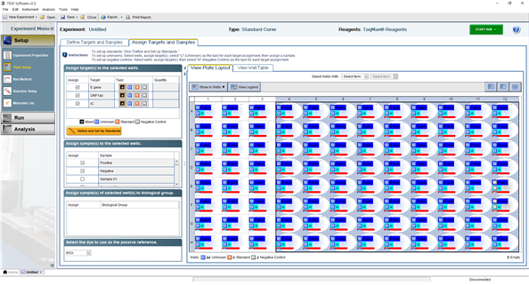
실행하는 Sample의 이름 혹은 Positive, Negative control의 이름을 지정한다. ABI7500 기기의 리드를 열어 PCR tube를 기기에 넣어 준 후 리드를 닫는다.
좌측 Run 배너를 클릭 후 Start Run을 클릭한다. 저장 경로를 선택한 후 저장하고자 하는 파일 이름을 설정하여 실행한다.
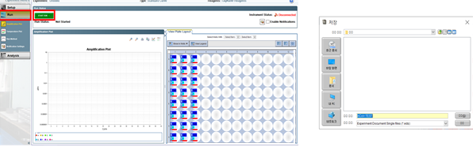
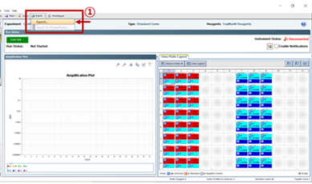
검사가 완료되면 프로그램 상단 export창을 click하고 data export를 수행한다.
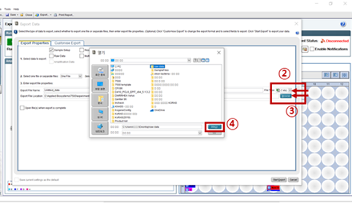
COVID-19 Viewer를 실행한다.
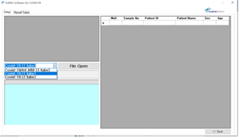
① 실행한 Viewer의 좌측 화살표를 눌러 항목을 선택한 후 File Open 버튼을 클릭한다.
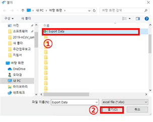
① 앞서 저장한 export data의 파일 위치 및 파일 이름을 확인하여 클릭한다. ② 하단의 열기 버튼을 눌러 실행한다.
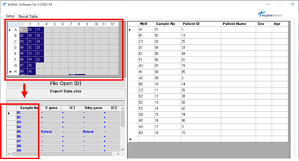
실행된 Viewer의 좌측 상단에는 실험을 진행한 Plate well의 위치를 표기하며, 하단에서는 각 Sample No. 에 따른 target 및 IC의 Positive, Negative가 +, - 로 표기된다.
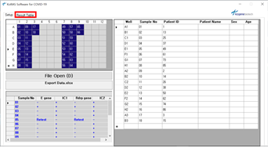
상단의 Result Table을 클릭한다.
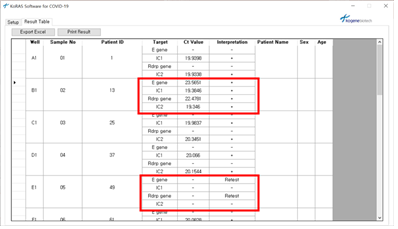
Sample No. 에 따른 target 및 IC의 Ct 값과 Positive, Negative가 +, - 로 표기된다. IC가 증폭되지 않았을 경우 Retest로 표기된다.
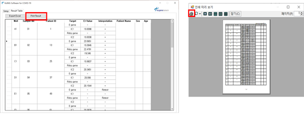
상단의 Print Result를 클릭하면 인쇄하여 결과를 확인할 수 있다.
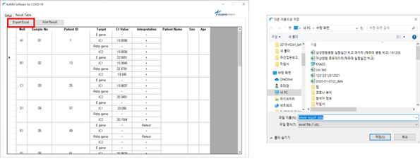
Viewer에 표기된 Patient ID 혹은 +,-의 변경을 원할 경우 상단의 Export Excel을 클릭하여 저장하고자 하는 파일 경로와 파일이름을 설정하여 저장한다.
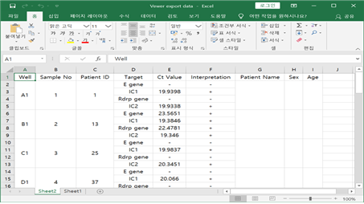
export 된 excel을 이용하여 편집하여 저장한다.
정도관리물질 : Negative control은 이미 검사된 검체중 음성인 검체 시행한다 Positive control은 kit에서 제공하는 물질로 시행한다.
| Case No. | Interpretation | |||
|---|---|---|---|---|
| E gene | ORF1ab gene | |||
| Case 1 | + | + | +/-* | SARS-CoV-2 양성 |
| Case 2 | - | - | + | SARS-CoV-2 음성 |
| Case 3 | + | - | +/-* | Inconclusive result (Retest) |
| Case 4 | - | + | +/-* | SARS-CoV-2 음성 |
| Case 5** | - | - | - | 유효하지 않은 결과/재추출 후 재검사 |
| 문제 | 원인 | 조치사항 |
|---|---|---|
| 프로그램 결과상 아무런 증폭 그래프가 보이지 않는 경우 | Positive control은 잘 증폭되었다면 PCR inhibition일 수 있음 | 샘플 1/10 희석후 재실험 |
| Positive control은 잘 증폭되었다면 해당 well에 primer/probe mix를 첨가하지 않았을 수 있음 | Analysis 창에서 multicom ponent 확인하여 형광이 검출되는지 확인. | |
| 형광이 없다면 재실험 형광이 있다면 샘플희석 후 재실험 | ||
| 냉해동을 10번이상 반복하였거나 배송 및 보관 중 상온에 노출되어 키트의 안정성 저하 | 새로운 키트로 교체 | |
| Negative control에 서 band가 올라오는 경우 | 금번 실험중 양성시료 또는 positive control의 오염 | 재실험하면 사라짐 |
| Negative control뿐 아니라 모든 well에 서 band가 올라오는 경우 | Primer/Probe mix가 pipetitng 실수로 인하여 양성물질에 오염 | 새로운 Primer/Probe로 교체 |
| 실험환경의 오염가능성 | Cleanbench 락스 1/50 희석액으로 소독필요 | |
| DNA remover로 소독 필요 | ||
| Positive control이 증폭되지 않는 경우 | Positive control 자체 degradation | 새로운 positive control교체 |
| 장비 구동중 error 메세지 | 대부분 구동중 기기 연결선을 건드렸거나 프로그램내의 충돌로 인한 1회적 현상 | 박테리아와 같이 DNA 키트인 경우는 한시간 이내일 경우 다시구동 |
| 바이러스같이 RNA키트인 경우는 30분 이내일 경우 다시구동 | ||
| 발견한 시간이 한시간이상 이면 다시 MIX하여 재실험 | ||
| Negative control에 서 band가 올라오는 경우 | 금번 실험중 양성시료 또는 positive control의 오염 | 재실험하면 사라짐 |
| 증폭그래프의 패턴이 해당그래프와 같은 경우 | 기본적으로 설정된 baseline에 비하 여 샘플이 강양성으로 증폭된 경우 | 양성으로 결과를 내도 무방함 |
| 원래대로의 증폭 band를 확인하고 싶으면 baseline을 | ||
| 3~5사이로 조정 | ||
| 증폭 band가 곡선이 아닌 찌글거리는 경 우 | Positiive control은 괜찮지만 샘플내에 형광을 난반사 시키는 이 | 샘플 재추출 후 재실험 |
| 물질이 들어간 경우 | ||
| Positive control도 찌글거리는 경우 | 기기의 block, 커버의 balance 이상. 기기담당 회사에 연락 | |
| 프로그램 구동은 되지만 온도가 올라가지 않는 경우 | 기기 heat-cover의 고장 | 기기담당 회사에 연락 |
| 금번 실험중 양성시료 또는 positive control의 오염 | DNA remover를 이용하여 실험환경 소독 후 실험 진행 | |
| 지속적으로 발생할 경우 실험 환경 오염가능성 | *단번에 사라지진 않으며, 지속적인 소독을 통해 결과 완화 | |
| E gene과 ORF1ab gene중 하나만 Ct 값 35~37사이로 증폭되며, 재검하였을 때 Negative인 경우 |
분자진단 검사지침서
(STANDARD M nCoV Real-Time Detection kit , 에스디바이오센서)
목차
Real Time PCR
코로나바이러스의 유전 물질 (geneticmaterial)은 가축, 애완 동물 및 인간에 질병을 일으키는 병원체로 다양한 급성 및 만성 질환을 유발할 수 있다. 코로나바이러스에 감염된 사람의 일반적인 징후로는 호흡기 증상, 열, 기침, 및 호흡 곤란이 있다. 더 심한 경우 감염은 폐렴, 심각한 급성 호흡기 증후군, 신부전 및 사망을 유발할 수 있다. 2019 New Coronavirus (SARS-CoV-2)는 2019년 중국 우한 지역의 바이러스성 폐렴 사례로 발견되어 2020년 1월 12일 세계보건기구 (WHO)에 의해 명명되었으며 전세계적으로 확산되고 있다. 본 검사는 실시간 역전사중합효소연쇄반응 (Real-time RT-PCR)을 이용한 정성검사이다. 호흡기 감염병 의심환자의 검체(객담, 구인두 및 비인두 가검물)에서 코로나19 바이러스 (2019-nCoV)의 유전자 (E gene, ORF1ab (RdRp) gene)를 정성 검출하여 코로나바이러스감염증–19의 초기 진단을 통해 감염병 확산 방지에 도움이 된다.
본 검사는 WHO 2020년 1월 WHO에서 발표한 “WHO interim guidance for laboratory testing for 2019 novel coronavirus (2019-nCoV) in humans” 에 따라 고안된 real-time RT-PCR 검사이다. 코로나바이러스 RNA를 역전사효소를 통해 cDNA로 역전사 시켜 PCR의 template로 사용한다. Screening assay를 위한 E gene (JOE/HEX/VIC channel) 과 SARS-CoV-2의 특이적인 검출을 위한 ORF1ab (RdRp) gene (FAM channel)의 특정서열을 동시에 정성 검출한다. 매 테스트마다 Internal control (CY5 channel)을 포함시켜 RT-PCR 반응의 유효성 여부를 확인할 수 있다.
| 구성품 (96T/kit) | 수량 | |
|---|---|---|
| 1 | 2019-nCoV Reaction S olution | 750 ㎕/vial x 2 |
| 2 | RTase Mix | 630 ㎕/vial x 1 |
| 3 | 2019-nCoV Positive control | 600 ㎕/vial x 1 |
| 4 | Negative control | 600 ㎕L/vial x 1 |
| 5 | Internal control A | 525 ㎕/vial x 1 |
| 6 | ROX* | 55 ㎕/vial x 1 |
| 7 | 사용설명서 | 1 |
(모든 검체는 잠재적인 감염성 물질로 취급하여 주의 필요)
[비인두 도말 (Nasopharyngeal swab)]
[구인두 도말 (Oropharyngeal swab)]
[객담 (Sputum)]
<객담의 전처리> 객담과 동일한 양의 2X Sputum lysis buffer (N-acetylcysteine 10g/L, 0.9% sodium chloride)를 첨가하여 30분간 shaking incubation 시킨 후, 핵산 추출을 진행한다.
바. 핵산 (Viral RNA) 추출 Viral RNA 추출 시약 (장비) 사용설명서에 제시된 방법에 따라 viral RNA를 추출한다. (추출 효율 (수율 yield, 순도 purity)에 따라 PCR 결과에 영향을 미칠 수 있음)
사. RT-PCR 실험 방법
| 시약 | 용량 /reaction | |
|---|---|---|
| 1 | 2019-nCoV Reaction Solution | 14㎕ |
| 2 | RTase Mix | 6㎕ |
| 3 | Internal control A(증폭부터 적용 시) | 0.5㎕ |
| Total vol. / well | 20.5㎕(증폭부터 적용하는 경우) | |
| 20㎕ (추출 시 검체 당 IC 5㎕씩 추가한 경우 , PC/NC well 에만 IC 0.5 ㎕씩 추 1. |
분쇄된 얼음이 담긴 아이스 박스를 사용하여 반응 검체 수 (N = 테스트 할 검체수 + 컨트롤 2 + 1)에 따라 반응 용액을 준비한다. 아래표와 같이 mixture를 준비하여 real-time PCR reaction tube 각 well에 20.5㎕씩 분주한다. IC를 추출부터 적용할 경우, 검체에 5㎕의 IC를 추가하여 추출을 진행하고 PCR 과정에서는 IC를 제외한 mixture를 각 well에 20㎕씩 분주한다. (PC/NC well에는 IC를 각각 0.5㎕씩 분주)
| 반응 | 온도 (℃) | 시간 | 반복 |
|---|---|---|---|
| Reverse transcription | 50 ℃ | 15 :00 | 1 |
| Initial denaturation | 95 ℃ | 3:00 | 1 |
| Pre-amplification | 95 ℃ | 0:05 | 5 |
| 60 ℃ | 0:40 | ||
| Amplification | 95 ℃ | 0:05 | 40 |
| 60 ℃ | 0:40 | ||
| 스캔 (FAM/HEX/CY5 ) |
아. CFX96 Real-Time PCR Detection System 구동 설정 및 결과 판독
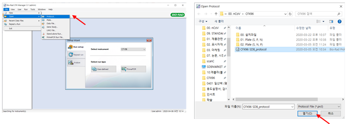
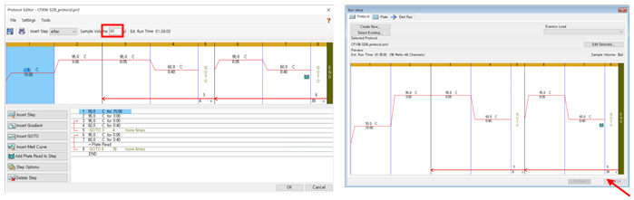
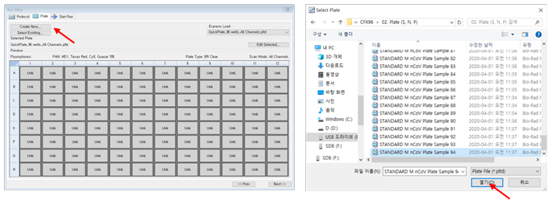
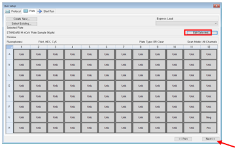
(Plate 설정 변경 시, ‘Edit Selected...’ 클릭하여 설정 변경 후, ‘OK’ > ‘Next’)
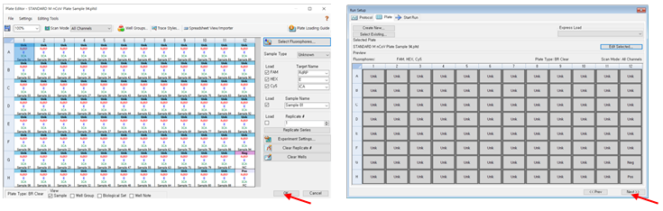
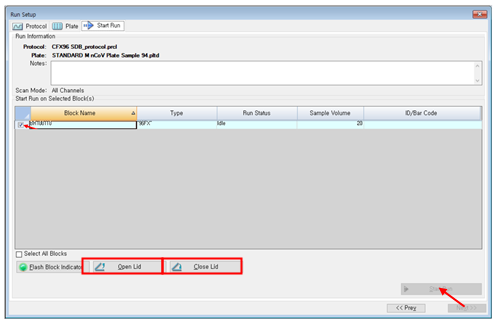
PCR 종료 후 Data 저장할 파일명과 저장 위치 설정 > ‘OK’ > 구동 시작
결과 판독 Auto Threshold로 분석하거나 장비별 결과의 재현성을 위해 해당 장비마다 형광 channel 별로 고정된 Threshold 사용하여 각 Target gene의 Ct 값으로 결과 해석 (PC: 25 Ct ± 1, IC: 23 Ct ± 1 로 분석되는 Threshold 값) (Baseline 설정이 안 된 경우, Settings > Baseline Setting > Baseline Subtracted Curve Fit 선택)
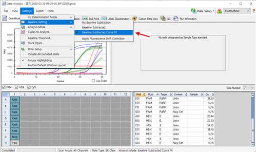
분석프로그램으로 해당 실험 Data를 열고, Ct값 분석을 수행한다. 각 target gene에 대한 Ct cut-off는 아래표를 참고한다.
| Target | Ct Value | 결과 |
|---|---|---|
| ORF1ab (RdRp ) gene (FAM) | Ct≤36 | 2019-nCov ORF1ab (RdRp ) gene positive |
| E gene (HEX) | Ct≤36 | E gene positive |
| Internal Control (CY5) | Ct≤32 | Internal control positive |
검체 별 각 target gene의 결과에 따라 검사의 유효성과 결과의 해석은 아래표를 참고한다.
| ORF1ab (RdRp ) gene FAM | E gene HEX | Internal Control CY5 | 결과 |
|---|---|---|---|
| Positive | Positive | Positive/Negative | 2019-nCoV positive |
| Positive | Negative | Positive/Negative | Inconclusive |
| Negative | Positive | Positive/Negative | Near-source Coronavirus positive |
| Negative | Negative | Positive | 2019-nCoV negative |
| Negative | Negative | Negative | Invalid / Re-test |
매 테스트마다 PC와 NC를 각 1well 이상 설정한다. 컨트롤의 테스트 결과는 검체의 결과 해석과 동일한 기준으로 판단하여 아래표의 요구 사항을 충족해야 한다. 요구 사항을 충족하지 않는 경우, 기기, 시약 및 증폭 조건에 오류가 있는지 확인하고 새로운 검체와 새로운 시약으로 재검한다.
| Control | ORF1ab (RdRp) gene FAM | E gene HEX | Internal Control CY5 |
|---|---|---|---|
| 2019-nCoV Positive control | Positive | Positive | 요구 사항 없음 |
| Negative control | Undetermined | Undetermined | Positive |
카. Trouble shooting 제조사의 Trouble shooting Guide 참고
분자진단 검사지침서
(Xpert Xpress SARS-CoV-2, Cepheid)
목차
Real Time PCR
본 제품은 코로나바이러스-19 의심 환자의 비인두 도말 또는 구인두 도말에서 코로나바이러스-19의 N2와 E 유전자를 검출하여 코로나바이러스-19 감염을 확인하는 체외진단의료기기이다. GeneXpert System으로 검사되므로 검체 전처리, 핵산 추출, 증폭 및 실시간 역전사 중합효소연쇄반응법을 통한 Target 유전자 확인까지의 모든 검사과정이 자동으로 이루어진다. 시약 내에는 형광표지물질들이 포함되어 있으며 이 물질들은 증폭산물에 특이적으로 결합하는 올리고핵산염 프로브(probe)에 연결되어 있다. PCR 중에 형광의 강도를 모니터링하여 결과를 도출한다.
장비 준비
카트리지 준비
검사 시작 준비
장비 정리
Negative
| Probe | N2 | E | SPC |
|---|---|---|---|
| 범위 | 45 | 45 | 45 |
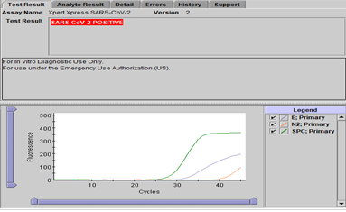
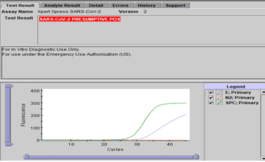
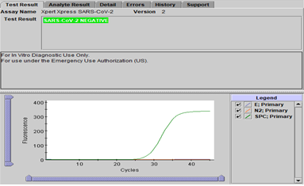
재검이 필요 한 상황
재검방법
PDF file로 결과 저장 방법
결과 그래프 출력 방법
데이터 날짜별 저장 방법
날짜별로 저장한 데이터 불러오는 방법
분자진단 검사지침서
(BioSewoom, Real-Q Direct SARS-CoV-2 Detection Kit)
Real Time PCR
Real-Q Direct SARS-CoV-2 Detection Kit 은 호흡기 감염병 의심환자의 검체(비인두 및 구인두 가검물)에서 추출된 RNA를 사용하여 cDNA 합성 과정 없이 SARS-CoV-2의 유전자(RdRP gene, E gene) 매우 특이성 있고 민감하게 검출할 수 있는 제품으로 사용하도록 제조되었다. RdRP gene의 증폭을 위하여 5’ end에 FAM, 3’ end는 SFC Q1이 부착된 probe를 사용하고 있다. E gene 의 증폭을 위하여 5’ end에 HEX, 3’ end는 SFC Q1이 부착된 probe를 사용하고 있다. 그리고 5’ end에 CY5, 3’ end에 Iowa Black이 부착된 probe를 사용하여 internal control 유전자를 증폭하도록 제작되었고, internal control 유전자는 Human RNase P 유전자를 증폭하도록 고안되어 전체 실험과정의 오류를 확인할 수 있다.
| Tube/Cap | Label | Contents |
|---|---|---|
| 1 / White | 8-strip | 1T x 100 PCR reaction mixture, Primer and TaqMan probe mixture(specific for COVID-19 and IC amplification) |
| 2 / Blue | Positive control | 50 µl |
| 3 / Neutral | Water, sterile, DNase/RNase free | 1000 µl |
Note : 8-Strips에는 PCR reaction mixture, probe & primer mixture, enzyme mixture가 포함되어 있다.
모든 구성물은 사용직전에 꺼내어 해동 후 가볍게 원심분리 하여 사용한다.
< Applied Biosystems 7500 fast>
| Step | 온도 | 시간 | Cycle # | Acquisition mode |
|---|---|---|---|---|
| 1 | 50 °C | 10 min | 1 cycle | |
| 2 | 95 °C | 3 min | 1 cycle | |
| 3 | 95 °C | 10 sec | 3 cycles | |
| 62 °C | 20 sec | |||
| Not acquiring | ||||
| 4 | 95 °C | 10 sec | 40 cycles | Acquiring on |
| 62 °C | 30 sec | FAM ,VIC,Cy5 |
Note : Reporter 에는 FAM, VIC, Cy5로 지정하고, Quencher는 모두 None으로 설정한다. PCR reaction mixture에 passive reference dye가 포함되어 있지 않으므로 passive reference를 “None” 으로 지정한다.
Negative
자. 결과해석 및 보고
| FAM Ct (RdRP gene) | HEX/VIC Ct (E gene) | Cy5 (HRP) |
|---|---|---|
| ≤38 | ≤38 | ≤35 |
| FAM | HEX/VIC | Cy5 | ||
|---|---|---|---|---|
| (RdRP) | (E gene) | (IC) | Result | Comment |
| + | + | +/- | 2019-nCoV양성 | |
| + | - | +/- | Inconclusive | 재검을 권장한다. |
| - | + | +/- | Inconclusive | 재검을 권장한다. |
| - | - | + | 음성 | |
| - | - | - | Invalid | 재검을 실시한다. |
분자진단 검사지침서
(STANDARD™ M10 SARS-CoV-2)
Real Time PCR
신종 코로나바이러스(SARS-CoV-2)의 확인을 위하여 STANDARD™ M10 (실시간유전자증폭장치)를 이용하여 핵산 추출부터 증폭 및 분석까지 진행되는 통합 자동화 시스템에 사용되는 카트리이다. STANDARD™ M10 SARS-CoV-2는 카트리지 형태로 핵산 추출에 필요한 시약들이 포함되어 있 으며 유리섬유(glass fiber filter; 실리카 기반 막)에 핵산 흡착 방식을 통해 검체로부터 바이러 스 RNA를 정제합니다. 정제된 RNA는 신종 코로나바이러스의 특정 서열에 결합하는 프라이머 (primer)와 형광 표지된 TaqMan 프로브(probe)를 사용하여 실시간 역전사중합효소연쇄반응 (Real-Time Reverse Transcription Polymerase Chain Reaction) 방식을 통해 증폭 및 검출된다.
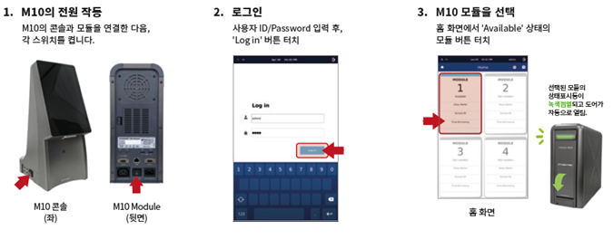
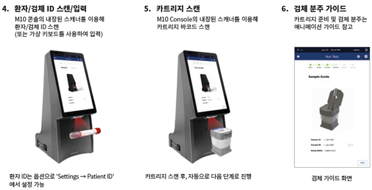
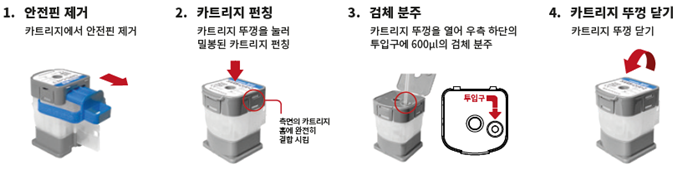
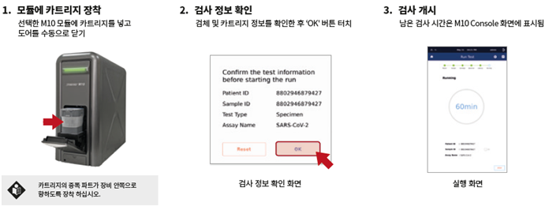
Negative
| 검출 타겟 | 형광 |
|---|---|
| ORF1ab 유전자 | FAM |
| E 유전자 | HEX |
| 내부대조물질 | Cy5 |
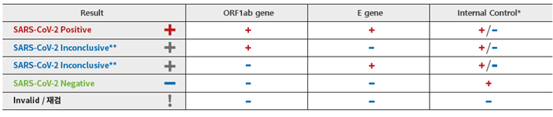
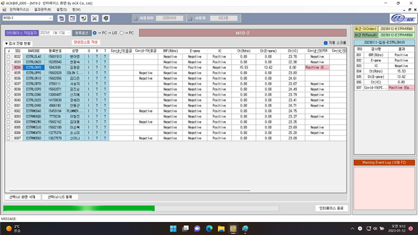